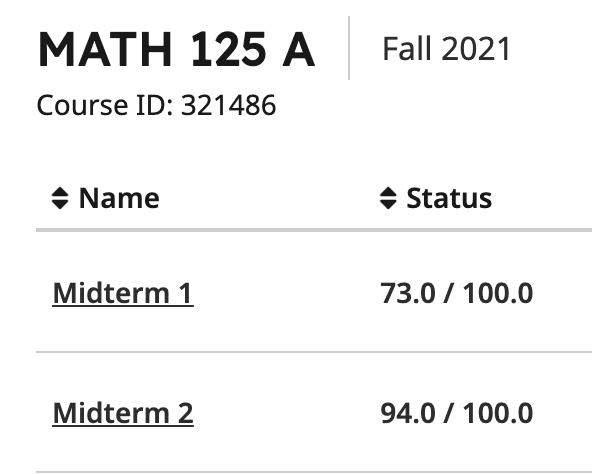
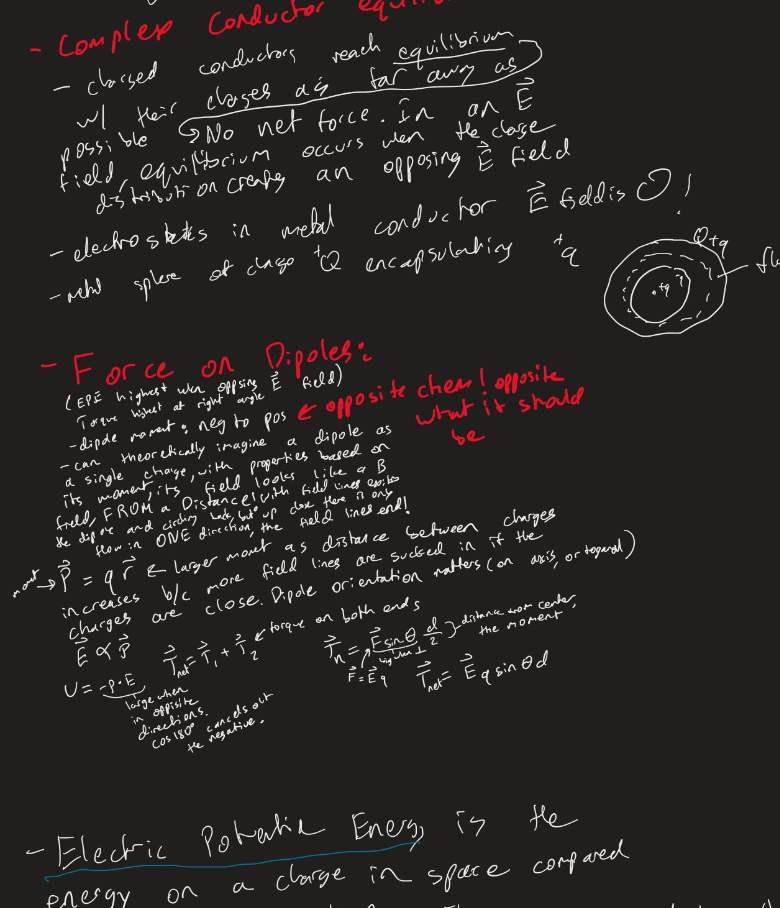
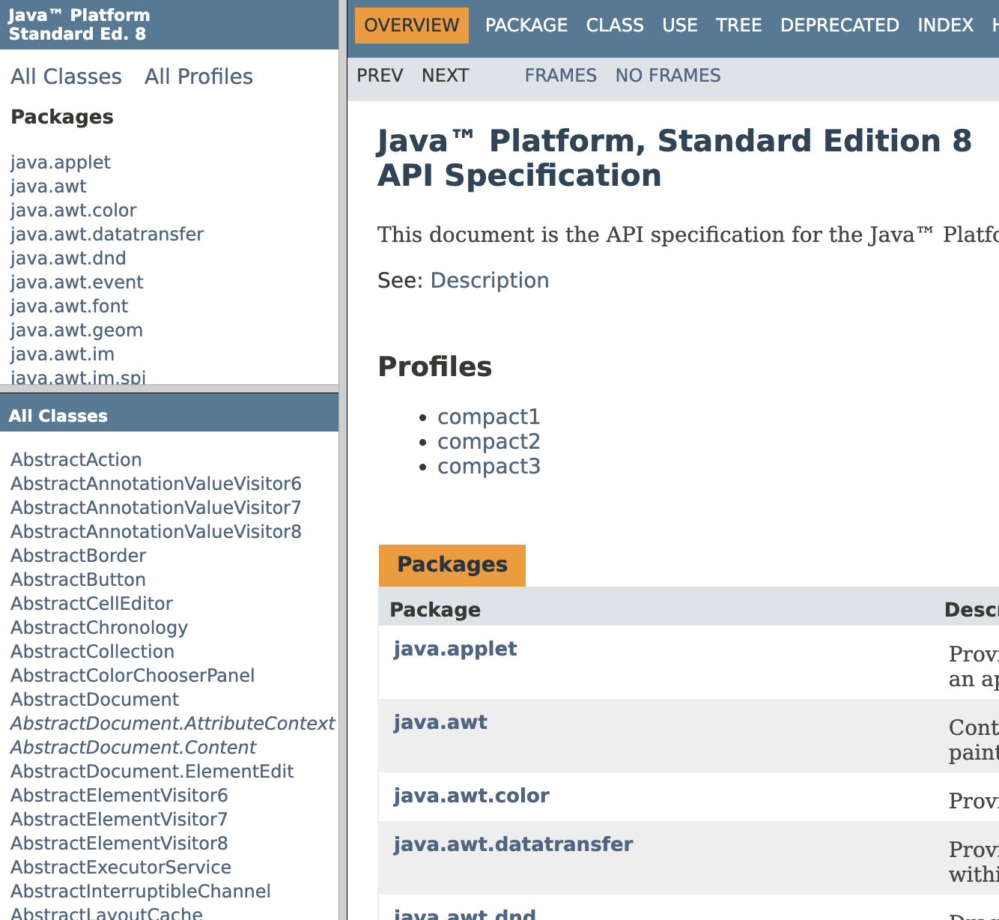
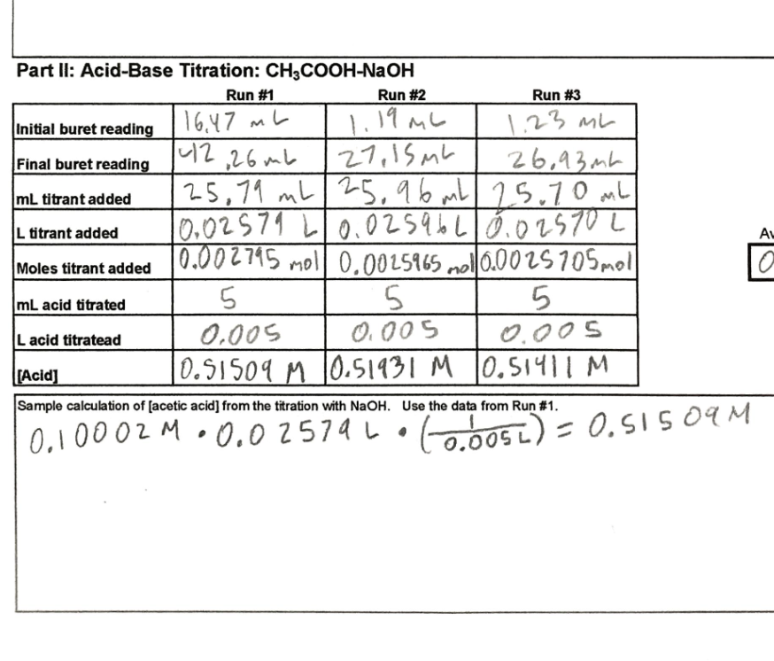
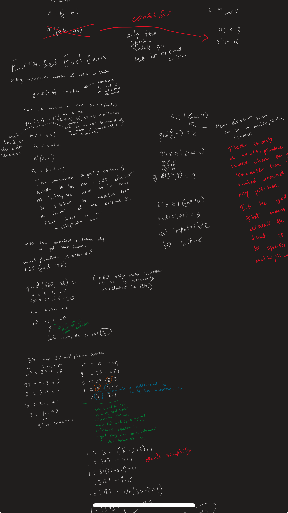

My "welcome to college" moment was when I took my first calculus midterm in freshman year. Not finishing the exam was a harsh blow to my self esteem. I took that lesson to heart. I did every homework assignment with the goal of complete comfort with each problem type, and that paid off (not just for the second midterm). I was worried that I would sacrifice my greater understanding if I focused too much on solving the problems, but I soon learned that if the problems require understanding and I solve them myself, then my knowledge improved considerably (perhaps I was also motivated by having a reason to understand).
I took introductory chemistry and introductory physics as a freshman. I still wasn't sure what exactly I wanted to do. I didn't completely have my heart set on computer science, though I did enjoy it. Mostly, I didn't like the restriction I felt at the major system, that I was here to be good at computers and that was it. I have a much wider variety of interests, and I hoped college would help me solve problems across all of those interests. That was the main reason I was putting on my safety goggles and learning about enthalpy. In the short term, I hoped to do some work in computational biology.
It is an annoying class, but I still loved physics 122. It answered so many of my fundamental questions about the world, checking off some of my goals to understand electromagnetism. I still think about this class. If I was not majoring in computer science, I would have majored in physics because of this class. I took some of the most thorough notes I have ever taken preparing for the exams, writing my own understanding of almost every concept, and that paid off.
The famed torus. The class before the midterm we went through a difficult calc problem with a torus. I was still too stubborn to accept the hint that this arbitrary problem would show up on the exam, and refused to put it on my notes sheet. That was stupid. But more importantly the torus is was a example of non-trivial parameterization, which was one of my first experiences with a more generalizable mathematical concept.
In my first computer class with real programming projects, I became very comfortable with some tools that would turn out to be useful in the future. One of those tools was the Java documentation. More generally, this class was helpful in teaching me to read super boring technical material, which can come in handy when reading certain academic papers.
Chem 152 was an example of continuing to learn in accordance with my goals. But, I was starting to run into problems, I wasn't getting anywhere. Chem 152 was mostly waste of time, I did not care about titration or how to balance every reaction, I was just going through the motions on this lab report. In hindsight, I should have taken the honors version of all of math, physics, and chemistry. I should have ignored most of my major courses, especially during that foundational freshman year, because there was a lot of time, I could've come into those major specific courses with more general knowledge.
Math 208 was one of the best classes I had taken so far. This class is the first introduction into more abstract math, such as "vector spaces", which we see me playing with in this artifact. It felt like such a breath of fresh air compared to some of my frustrations with the artifical difficulty of calculus. It helped offset the disappointment of chem 152. Considering how much machine learning work I ended up doing, it is good I liked math 208.
In my introductory logic course, I became pretty obsessed with the greatest common denominator proof, you can see a hint of the obsession in my notes. I also did a lot of wikipedia reading on other logical systems when I should have been studying for my other classes.
